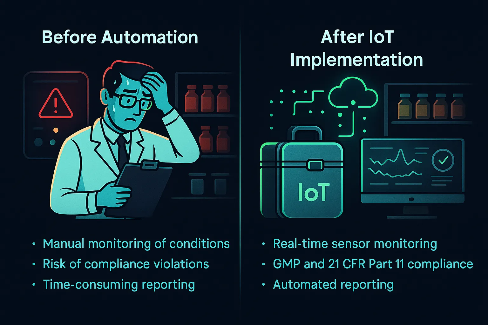
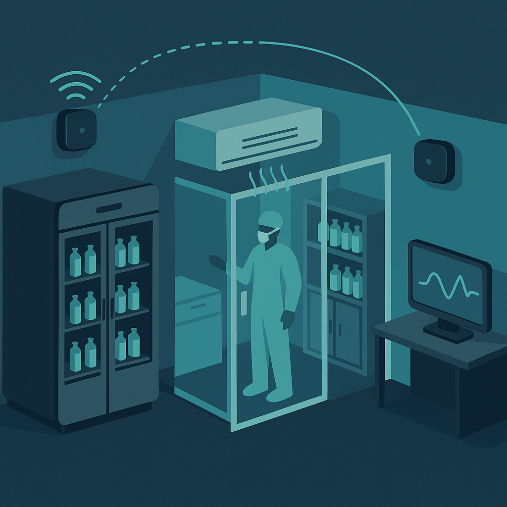

PharmaCase
A real-world digital transformation of a pharmaceutical production site — from manual logs to intelligent automation.
CEO Insight
"We created MITE not just to monitor — but to empower pharmaceutical teams with actionable data, greater oversight, and confidence in compliance. Our platform adapts to your processes, not the other way around."
— CEO, MITE

Before MITE
- 📝 Paper logs for temperature and humidity.
- ⏳ Delayed alarm response — issues discovered after product damage.
- 🔒 No centralized visibility — each chamber handled separately.
- 📉 Risk of GMP violations and costly product loss.
After MITE IoT
- 📡 Wireless IIoT sensors (Wi-Fi / GSM / LoRaWAN / NB-IoT)
- 🌐 End-to-end cold chain traceability across facilities and transportation
- 🧠 Intelligent alerts based on dynamic thresholds and historical data, various dashboards, automatical reports
- 🔗 Seamless integration with existing systems - QMS, ERP, LIMS and audit workflows
- 🔐 Built-in data security and compliance with global GMP standards
Results After Implementation
- ✅ 75% faster incident response
- ✅ 0% spoiled batches due to environmental deviations
- ✅ Real-time control over all storage zones (GxP, warehouse, fridges, transportation)
- ✅ Reduced human error and reporting workload by 3+ FTEs
How MITE Works
A step-by-step transition to smart GMP compliance
Step 1: Identify risk zones
- Audit existing process risks
- Map cleanrooms, storage, and temperature-sensitive areas
- Define validation strategy and user needs

Step 2: Install sensors
- Deploy battery-powered wireless modules
- Monitor fridges, chambers, warehouses, HVAC
- Works in isolated and shielded rooms (metal, concrete)
Step 3: Go live & validate
- Enable real-time alerting
- Calibrate sensors and log user validation
- Start digital reporting and audit trails